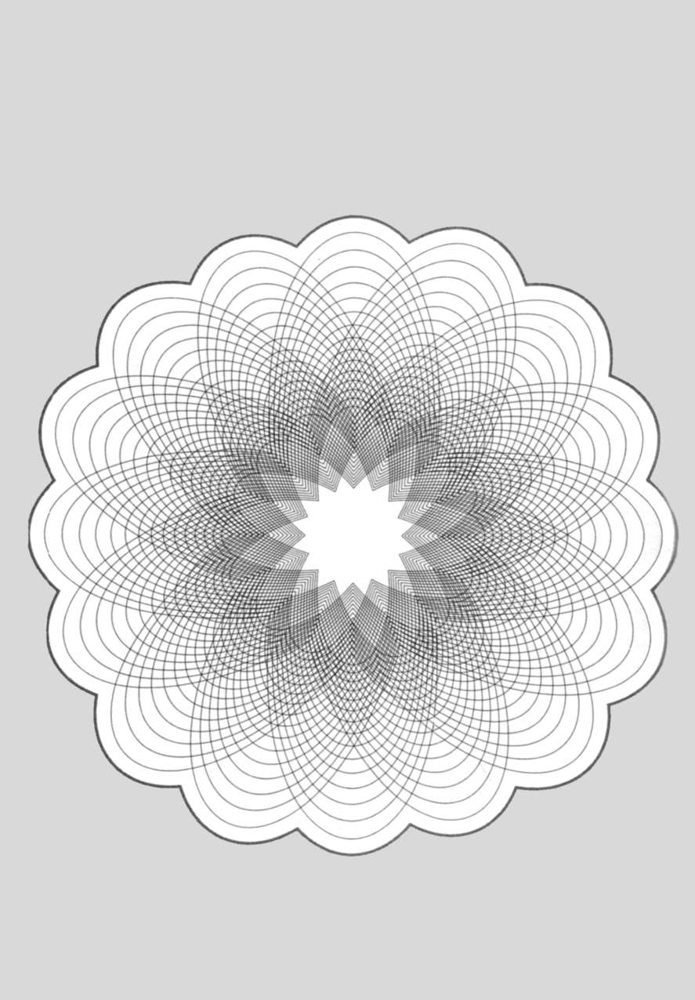

96 DNA 的黄金比例
数学概念：黄金比例、斐波那契数列
黄金比例不仅经常出现在艺术里，它也是自然中反复出现的主题。其实，黄金比例也是你的一部分，它在你身体的每个细胞的每个DNA分子中（DNA，脱氧核糖核酸的简称，其中包含组成蛋白质的指令，反过来又构成身体的器官组织，调节各器官的功能。荷尔蒙和酶都是蛋白质，比如可以帮助肌肉收缩的肌动蛋白，它也是细胞内部骨架的一部分，可以让细胞呈现各自的形状）。众所周知，DNA分子结构———双螺旋结构，是詹姆斯·沃森和弗朗西斯·克里克在1953年发现的。双螺旋结构的每一个完整螺旋长34埃米，宽21埃米（1埃米等于百万分之一厘米），这两个数字的比是1∶1．6190，非常接近黄金比例的1．618。
34和21这两个数字还有一个特别之处，它们也出现在斐波那契数列中，即列昂纳多·斐波那契在13世纪提出的一个数列（参见第89章）。在这个数列中，每个数都是前两个数的和，比较其中任何两个相邻的数，它们之间的比都接近黄金比例。此外，数越大，它们的比越接近黄金比例。因此，5和8是斐波那契数列中较早出现的两个数，它们的比是1∶1．6，377和610这两个后出现的数的比则是1∶1．61803714，小数点后的五位数与黄金比例完全相同。
φ与黄金比例
1909年，为纪念古希腊雕塑家菲狄亚斯（很多人认为他在雕塑中应用了黄金比例），美国数学家马克·巴尔首次用希腊字母来表示黄金比例。
